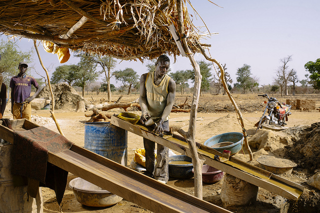

Guest post: African countries level playing field with oil and gold corporations
African countries are developing financial skills to stop some multinational corporations from taking advantage of their lack of know-how. Alex Starritt reports on teams from the Ivory Coast and Kenya tackling this problem using publicly available data

Gold mining. CC BY 2.0, uploaded by CIFOR.
by Alex Starritt
Dozens of developing countries sell access to oil, gold and other reserves without being able to analyse the financial basis on which these deals are made, and a new project to help them make the requisite financial models has started to reveal how much these deals are really costing them.
One of the first results, in the Ivory Coast, has shown that a poorly understood tax break for mining companies is costing the country hundreds of millions of dollars.
A lack of capacity
Poor management of abundant natural resources has created a phenomenon known as ‘the curse of oil’ or ‘the paradox of plenty’: countries rich in natural resources tend to have less growth, worse democracy and slower development than those without.
One official from a West African country, who did not want to be identified, told Apolitical, "The capacity in the entire government for financial modelling is detrimentally shocking. The main model supposedly used by the government – the Fari model developed by the IMF – is not kept up to date because nobody knows how to use it."
"Every half year, officials from different ministries meet and update their entire macroeconomic forecasts on this basis, but no one really knows how the model works. This has led to tremendous mis-forecasting, which is one reason for the financial crisis. They forecast that they could spend a lot of money, which they have done, and now there are a lot of problems."
Expensive decisions being made blind
"Specialists come in, they give you a ready-made model, but then nobody knows how to use it because they don’t learn it from scratch. The Fari model might be good for the purposes of the IMF, but I suppose the person who developed it wasn’t thinking about teaching and educating people. Many people struggle with it. And people admit it themselves: it’s just too difficult. So this model sits around and, well, life goes on."
In the new modelling project, officials from developing countries study financial modelling and analyse mines or oils fields in their countries. The project was set up by a company called Open Oil, whose founder said, "A large number of countries are making enormous decisions, about billions of dollars, more or less blind. We suspect that some are getting bad deals and a lot more simply don’t know what the terms are that they’ve signed."
In the Ivory Coast, the project examined the five-year tax holiday given to the Yaoure gold mine, a standard sweetener to attract foreign companies. Until now, no one in the Ivorian government has actually known how much that exemption was costing them. The new analysis calculated a cost of $110 million dollars over five years. For the whole sector, it may be in the region of half a billion dollars. The average income in the Ivory Coast is around $3,100 a year.
Bienvenu Esse, one of Ivorian officials who did the analysis, was "absolutely" surprised by how much it was. "We quantified the financial impact and were able to measure the shortfall for the state. A review of all ongoing projects would certainly allow the adoption of strategies to improve the government’s revenues for future projects while developing a win-win policy with investors. The skills developed during this programme will be deployed to better guide decisions to maximise gains for the state and local communities."
Tax holidays and other concessions of this sort are given to make it worthwhile for foreign companies to invest – and the costs and risks may well be higher in Ivory Coast than other places.
"It’s not for us to say it’s a good policy or a bad policy," said West. "But a second analysis they’ve done shows the profitability for the investor under both scenarios, with and without the tax holiday. And there we see that the rate of return, even without the tax holiday, is projected to be 23-24%. That is well above normally accepted industry minimums needed to justify an investment."
Difficult but not impossible
The project trains interested public servants to create the financial models – of projected investments, running costs and profits – on which these deals are based. Multinational companies make their own models but, according to West, at least two dozen countries that depend heavily on natural resources are unable to make similar models themselves. That means that when they offer terms to foreign companies they do not know the value of what they are proposing.
Public servants interested in financial modelling are helped by Open Oil to learn the necessary skills and make a model of a mine or oil field in their country, all of it with publicly available data. Most are doing it in their own time, and it is far from easy. West estimates that the whole process will take someone 300-500 hours, and that of the people who take part in his boot camp, one in ten make it through. Nevertheless, out of 300 people starting the course, there have been three or four with zero experience in the field who have now made professional-standard models. As West puts it, "We’ve proved that it is difficult but not impossible."
A pivotal part of the programme is international co-operation. Because financial models are so complex, they need to be reviewed by someone else, something made much more arduous by all the different ways in which these models can be constructed. Open Oil has developed a standard framework to make this peer review possible, and the participants look at one another’s models to help them solve the inevitable problems.
“You ask the group: who can help me?”
"It’s very, very useful," Anastasia Wanjohi, of Kenya’s Commission on Revenue Allocation, told Apolitical. "Because you forget some things and when you’re working on something, you never see mistakes, but when you have a network of modellers, you ask the group: who can help me? And someone will say, it’s this-and-this. It’s very, very helpful and it brings checks into your model. When someone else looks at it, they can critique it constructively."
Wanjohi and her colleague John Mose are modelling the Kwale mine, the biggest in Kenya, which produces the ores ilmenite, rutile and zircon. There have been local protests alleging that the country is not gaining enough from the mine, hence the need for financial modelling to actually determine the project’s economics.
Wanjohi and Mose are not yet ready to publish their results, but she said, "When investors come into the country, Kenya needs to understand exactly the models they bring, to be able to negotiate. Because every company, every investor, before they come to a decision to invest, they have the financial models. If government has the capacity to actually scrutinise them, it will be able to understand and question what exactly they are."
The benefits of developing countries gaining this expertise could, if managed correctly, be cumulative, doing something to level up the balance of power between the owners of natural resources and those who work them. The Ivory Coast team want to model the entire sector, help set an internationally recognised standard and then require multinational companies to provide their own analyses in that format. There is also talk of using analyses of each country’s deals as benchmarks for the others.
This sort of ambitious expansion, which would ultimately allow countries like Ivory Coast to accurately predict how many bucks they will have in next year’s budget, relies on spreading this knowledge beyond a few pioneers. Otherwise, when they move on, the understanding will go with them. If that happens, these countries will be back where they started.
As Wanjohi put it, "If you don’t understand, you can’t question, you can’t do anything. That means we may get bad deals and be taken for a ride. But if we do understand, we’ll be able to get the best for Kenya and be economically empowered."
Alex Starritt is Editor at Apolitical. Follow @apoliticalco on Twitter.
This piece was written as part of a content partnership with Apolitical, an international platform for innovators in public service, and first appeared on the Apolitical website.
If you have ideas or experience in open data that you'd like to share, pitch us a blog or tweet us at [@ODIHQ](https://twitter.com/odihq “@ODIHQ”).